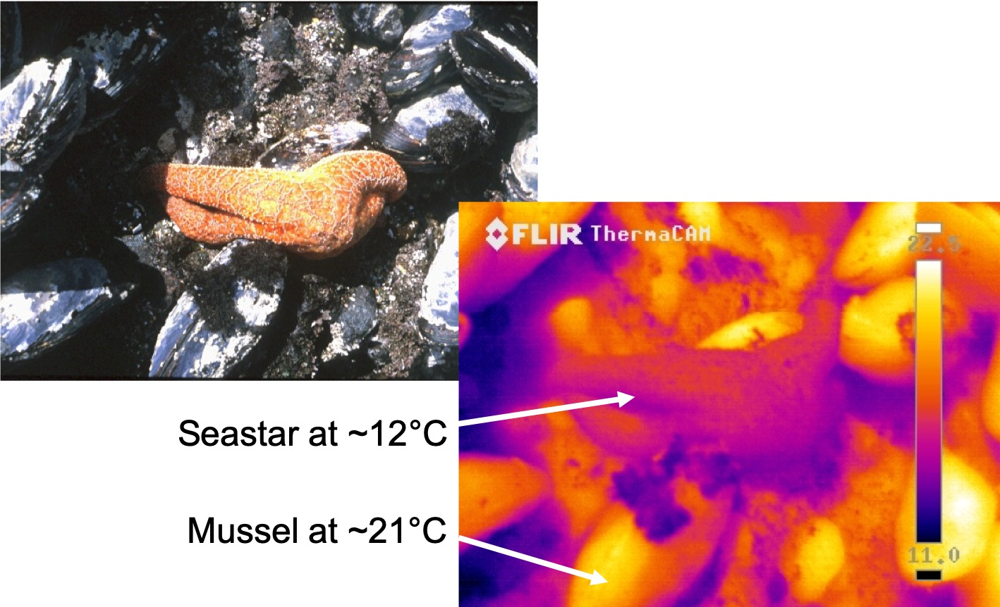

Photo credit: Brian Helmuth
While the mussels and sea stars are settled in the same environment, from this thermal image we can see a great temperature discrepancy between these two species. The discrepancy alters how mussels and sea stars interact. Why is this? Sea stars are colored lighter than mussels, which absorbs less solar radiation and keeps them cooler. Their different physical properties also alter heating rates. The thermal image captures how mussels and sea stars differently experience their environment, which might otherwise be missed.
Glenn J. Tattersall, Jaime A. Chaves, Raymond M. Danner
Bird bills are important for feeding, but recent research has shown that the bird bill can also act like a radiator to help release extra body heat. We studied this idea in Darwin’s finches, which have been the source of transformative findings about the evolution of animals. Scientists have found strong evidence in Darwin’s finches that birds’ bills have evolved to help eat different types of foods, and as a result have a wide array of bill shapes and sizes. To study the heat radiator function of the bill, we used hand-held thermal imaging cameras to take thermal images of surface temperatures of four species of Darwin’s finches in the wild, under a variety of weather conditions. We found evidence finch bills are effective heat radiators in hot weather. Further, finches can modify how much heat is lost from their bills, which may help them maintain optimal body temperature in a variety of weather conditions. Species differed in their use of the bill for heat loss, and heat loss patterns matched the microclimates they used. These results highlight the role of bird bills in thermoregulation and suggest that bill size in this system might be shaped, at least partially, by its function as a heat radiator.
{kind=link}